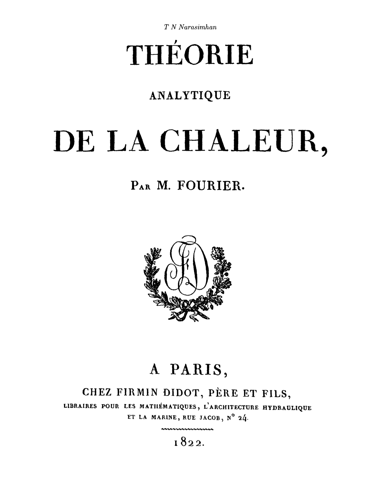

fourier's heat
¶
"... first developed and solved by Joseph Fourier in 1822 to describe heat flow, however, it is of fundamental importance in diverse scientific fields. In probability theory, connected with the study of random walks and Brownian motion... In financial mathematics, used to solve the Black–Scholes partial differential equation. In Quantum Mechanics, for finding spread of wave function in potential free region. A variant was also instrumental in the solution of the longstanding Poincaré conjecture of topology."(위키, "Heat Equation", 푸리에의 열방정식은 방정식 자체에 대한 해설이 필요할 정도로 중요하고, 매우 제너럴하고 강력한 생각법으로서 미분방정식이 가지는 의미를 보여주는 표준적인 사례니까 글모음으로 만들자.)
ref:
T. N. Narasimhan, 'Fourier's Heat Conduction Equation: History, Influences and Connections'
글목록
푸리에의 열방정식을 현대의 벡터 해석 표기법을 사용해서 나타내면 다음과 같다: \[ \divergence{K\grad T}=c\frac{\partial T}{\partial t} \]
\(K\)는 열전도율(thermal conductivity), \(T\)는 온도, \(c\)는 고체의 단위 부피당 비열용량(specific heat capacity)이다.1 이 방정식은 열이 흐르는 영역 내부에서 열이 보존된다는 의미를 가진다.
cf: 위키의 (Heat equation)항목에서는 처음부터 함수 \(u(x,y,z,t)\)을 써서 좀 더 일반적인 방식으로 도입하고 있다: \[ \frac{\partial u}{\partial t}=\alpha\left(\frac{\partial^2u}{\partial^2 x}+\frac{\partial^2u}{\partial^2 y}+\frac{\partial^2u}{\partial^2 z}\right) \] 이 때, \(\alpha\)는 실계수이며, 매질의 확산율(diffusivity)이라고 한다. 라플라시안을 사용해서 다음과 같이 간단히 나타낼 수 있다. \[ \dot u=\alpha\laplacian u. \]
다음 그림은 1차원에서 열방정식의 해를 나타낸다.


- Narasimhan, p. 122 [return]